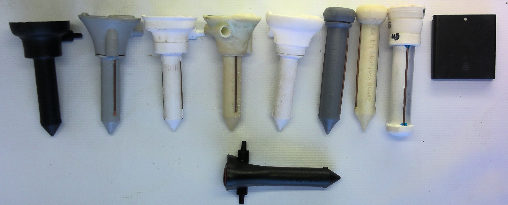

EZW10
Easy watering version #10
The large number of available watering devices is in itself a reflection of the limitations they have, critically the extent to which they can operate autonomously in remote areas where there is no electricity.
EZW10 stands for Easy Watering version 10. That is right, we tested nine versions before this one. EZW10 is an automatic irrigation system with a soil sensor and a water valve developed by Camilo Mora for the purpose of controlling water supply to individual trees while being operational with two AA batteries for up to two years. US patent application # US20180220602A1
Operation: First, connect the device to your water reservoir; it can be a water hose, but also a bucket. Note the direction of the arrow, which indicate the direction of the water flow. Next, place the stake part of the device below ground. The device has two lateral copper probes that are the soil moisture sensor; the device needs to be deep enough below ground for these probes to be in direct contact with the soil. That's it!.
The device is already configured to irrigate for 1 minute (about 250mL of water at ground level pressure) every other day in which soil water moisture is below 70%; If it rains enough to keep soil moisture above the threshold, the device will not irrigate optimizing the use of water for dryer days.

You can set your own water regime with the user interface of the device, nothing else required.

Top view
Menu functions:
Actual soil moisture:
* Push the Menu bottom once. This will activate the soil moisture probe, and display the Actual moisture content in the soil. Units are in percentage times 10.
Target soil moisture:
* Push the Menu bottom again. This will display the current "Target" soil moisture. Units are in percentage times 10. This is the moisture level you want in the soil. This threshold is used as reference to irrigate if the Actual soil moisture is below the desire Target.
You can set a higher or lower target, by pushing the Set bottom.
Timer:
* Push the Menu bottom again. This will display the time frequency at which you want to irrigate. Units are in days. You can set a higher or lower frequency, by pushing the Set bottom.
Water to deploy:
* Push the Menu bottom again. This will display the amount of time the water valve will be Open. Units are in minutes. At ground level, one minute is about 250mL of water. It is recommended that you check the amount of water you get in one minute, as this volume will be specific to your setup.
Battery level:
* Push the Menu bottom again. This will display the current charge in your battery. The device will be functional until the batteries are completely dead. The device will flash all LEDs to indicate that the batteries are low, after which you will have about two months to change the batteries.
CAUTION: Leaving the device on this specific setting will turn your device OFF. If the "Bat/Off" LED is blicking then the device is Off. If you want the device to remain on, push the Menu bottom again, ensuring it is left active on any setting other than the Bat/Off setting.
Replace batteries:
Unscrew the cap at the top of the device using a coin. Press the battery, then move it outwards. The spring inside the device will poke out the battery. Turn the device downwards for the second battery to come out by gravity. Place new batteries inside, using the polarity indicated in the image below, and close the cap again. Ensure the oring in the cap is well placed to avoid water getting inside the device.

Battery cap

Battery position
EZW10 development:
The EZW system was originally conceived as a DYI project for school children. The concept was that children will plant their own trees and leave them with an irrigation system that they built themselves. The basic circuit took less than a day to develop, and each children took about 2 hours to put together. From that first prototype to the EZW10 there have been four years of field testing and innovation!.
 First circuit
First circuit
Second circuit
Ok, may be the LCD was too much, and a whole Arduino was an overkill. So I replaced the Arduino for an Attiny 85 microchip, the soil probe for a couple copper wires, and replaced the LCD for an LED indicator to reduce cost. The price of all components was below ~$1.5 US dollars (Image above).
 Moving PCB #1
Moving PCB #1
Of course, I did not get this right the first time. Because we were soldering by hand, some components have to be moved to ensure children have an easy time putting them together.
 Prototypes of the PCB#1
Prototypes of the PCB#1
To make things simpler, I deployed the PCB in a four battery case. I modify the box to hold two batteries to power the system and the space of the other two batteries was used for the PCB. The soil probe and the water pump were connected with a wire. Not the best looking of things, but it did the job; well sort of (more on this later).
 PCB case
PCB case
Alright, time to see if children can put this thing together. Coincidentally, a local teacher asked me to give a lecture about climate change to his children, and I said I have a better idea. I can give the lecture, and we can plant some trees (to fix the problem) and built the irrigation, so children get some skills on engineering.

We did have a blast. I really love it working with these kids and you can tell so were they.

Next we invited the parents to a field trip to plant the trees...each tree was left with their irrigation system, and a bucket full of water, which should last about 2 months, adding ~1 litter of water every other day. We decided to play it save, and we put the irrigation system in a bag.
The children also wanted their tree to have a nice view, so they also decorated their buckets. I am telling you these trees could not be happier.
Worth mentioning that about half the trees and the irrigation systems were stoled the first weekend!..that is how good our systems were...that someone took the time to take them. I told the children that on the positive side, wherever those trees were planted, they were probably still having a good life.... anyway, we needed to get some consolation for our loses.


So back to the drawing board to develop a better casing for the circuit and the batteries. Given the original motivation of having children building the device, I decided to use a PVC pipe and caps...
EZW2 move to PVC case.
Pretty neat, ah? This systems was pretty good and water proof. I also changed to a smaller microchip and make the PCB smaller to fit in the PVC tube (Image below).

Realistically, however, this now was out of the league of things that I could do with school children, so I recruited my family to help test the first set of the second version of EZW2.
 Family assembling 30 prototypes of EZW2.
Family assembling 30 prototypes of EZW2.
The PVC case worked great the first time we deploy it them. They did have a couple orings and much less chance for water to get in. Unfortunately, we ask a person to change the batteries and because there were two orings, the person thought one was a spare... when we came to check all systems were flooded with water.... At least we knew the PVC tube was well sealed inside, because the tubes hold the water inside pretty good!.
As much as we wanted for the device to be build by children, there were just too many failure points for it to be reliable. So we decided to manufacture the device. As a result, two lines of development took place. One was to develop the PCB for the circuit
and the other was to develop a waterproof casing.

I wish I could say I got it right the first time, but there were a few trials and errors.
I needed to think outside box here. I knew the water pump was using too much electricity. In turn, all other available irrigation devices have used electro-magnetic valves (so-call Selenoids) to control water flow, but they are also energy hungry. So I decided to invent our own energy-efficient valve:

The functioning of the valve is described in more detail the URL link to the patent above.
The device can now be mass produced, with all parts costing $5 dollars. It is truly waterproof: I have program it underwater, no joke!. The plastic material also has UV additives to ensure it could last more than 15 years in the field. By it being reusable, we can reduce the cost of irrigation per tree considerably. The result: EZW10

EZW10 was developed by Camilo Mora, with the help of Audrey Rollo and Asryelle Mora Rollo.